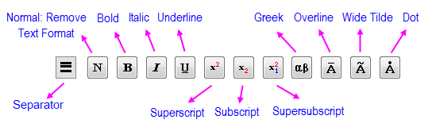

Die Registerkarte Text (Textobjekt - Text)
TextOb-Prop-Text-tab
Die Bedienelemente der Registerkarte Text werden von beiden Diagrammlegenden und Textobjekten gemeinsam verwendet. Für das einfache Bearbeiten gemeinsamer Textobjekte muss dieser Dialog meistensteils gar nicht mehr geöffnet werden. Stattdessen kann auf die Textbearbeitung gemäß WYSIWYG-Methoden für das Bearbeiten zurückgegriffen werden. Dieser Dialog ist für Änderungen an komplexeren Textobjekten, einschließlich Diagrammlegenden, wichtig.
Um den Dialog Objekteigenschaften zu öffnen:
- 1. Klicken Sie mit der rechten Maustaste auf das Textobjekt und wählen Sie Eigenschaften im Kontextmenü.
oder
- 2. Drücken Sie STRG, während Sie doppelt auf das Objekt klicken.
Liste der Schriftarten
Wählen Sie die gewünschte Schriftart aus dieser Liste aus. Die Standardschriftart wird in der Auswahlliste Zeichensatz (in der Gruppe Text-Hilfsmittel) der Registerkarte Zeichensätze im Dialog Optionen festgelegt.
Wählen Sie Standard:Schriftartname, um die Schriftart zu verwenden, die in der Auswahlliste Standard der Registerkarte Zeichensätze im Dialog Optionen festgelegt ist.
Schriftgröße
Geben Sie die gewünschte Schriftgröße (in Punkten) in das Auswahlfeld ein oder wählen Sie diese aus. Die Standardgröße wird im Kombinationsfeld Größe in der Gruppe Text-Hilfsmittel der Registerkarte Zeichensätze im Dialog Optionen (Einstellungen: Optionen) festgelegt.
|
Hinweis: Sie können die Schriftgröße jeder ausgewählten Textbeschriftung (Strg-Taste zum Auswählen mehrerer Beschriftungen) auch schnell ändern, indem Sie auf die Schaltflächen Schrift vergrößern _Text_tab/Button_Increase_Font.png) oder Schrift verkleinern oder Schrift verkleinern _Text_tab/Button_Decrease_Font.png) auf der Symbolleiste Format (Ansicht: Symbolleisten) klicken. auf der Symbolleiste Format (Ansicht: Symbolleisten) klicken.
|
Schriftfarbe
Wählen Sie aus dieser Auswahlliste die gewünschte Farbe aus.
Drehen (Grad)
Um die Beschriftung zu drehen, wählen Sie oder geben Sie den gewünschten Wert in dieses Auswahlfeld ein. Positive Werte drehen die Beschriftung entgegen dem Uhrzeigersinn. Negative Werte drehen sie im Uhrzeigersinn.
Wenn ein Textobjekt mit einem Linien-/Pfeilobjekt verbunden ist und dazu LabTalks relative Positionsmethode verwendet wurde, wird eine <automatische> Option zum Kombinationsfeld hinzugefügt. Die Auswahl von <Auto> veranlasst das Zieltextobjekt sich mit dem Quelllinien- oder Quellpfeilobjekt zu drehen, wenn die Quelle gedreht wird. Die Hilfsmittel Distanzanmerkung und Klammern mit Sternchen (Symbolleiste Hilfsmittel) haben diese Option (<Auto>) standardmäßig aktiviert.
Zeilenabstand(%)
Passen Sie den Abstand zwischen den Zeilen in dem Textobjekt an. Sie können den Wert in der Auswahlliste auswählen oder den gewünschten Wert direkt im Kombinationsfeld eingeben. Der von Ihnen ausgewählte oder eingegebene Wert ist der Prozentsatz der aktuellen Schrifthöhe. Negative Werte werden unterstützt.
- Wenn diese Option auf <Auto> gesetzt ist, folgt der Zeilenabstand des aktuellen Textobjekts der globablen Einstellung auf der Registerkarte Zeichensätze des Dialogs Optionen.
- Beachten Sie, dass Sie auf die Schaltfläche Trennzeichen
_Text_tab/Button_legend_dialog_separator.png) klicken können, um den Abstand zwischen den Zeilen manuell einzufügen. Durch Klicken auf die Schaltfläche wird eine Escape-Sequenz \sep:nn eingefügt. Der numerische Anteil der Escape-Sequenz ist die Höhe des Trennzeichens in Prozent der Schrifthöhe (Standard = 50). Passen Sie die Höhe nach Bedarf an.
klicken können, um den Abstand zwischen den Zeilen manuell einzufügen. Durch Klicken auf die Schaltfläche wird eine Escape-Sequenz \sep:nn eingefügt. Der numerische Anteil der Escape-Sequenz ist die Höhe des Trennzeichens in Prozent der Schrifthöhe (Standard = 50). Passen Sie die Höhe nach Bedarf an.
Tab
Verwenden Sie das Bedienelement Tab, um mehrzeilige Textbeschriftungen auszurichten. Dies kann zum Beispiel verwendet werden, um Text in einer Ergebnisbeschriftung auszurichten.
Weiß hinterlegen
Um einen separaten weißen Hintergrund für jede Textzeile in der Beschriftung zu zeichnen, wählen Sie Weiß hinterlegen.
Spalten ausrichten
Aktivieren Sie dieses Kontrollkästchen, um die Spalten für Beschriftungen auszurichten. Diese Option ist nur sinnvoll für Beschriftungen mit mehreren Spalten.
Wörtlich
Aktivieren Sie dieses Kontrollkästchen, um die Escape-Sequenzen, die in dem Text eingeschlossen sind, zu überschreiben. Dies ist besonders nützlich, wenn die Beschriftung verknüpfte Skriptvariablen wie einen Projektpfad (%X) beinhaltet, der wiederum Backslash-Zeichen '\' enthält.
Text ausrichten
Richten Sie Text links, mittig oder rechts aus. Kann nicht innerhalb einer Beschriftung gemischt werden.
_Text_tab/Tip_icon.png) |
Die gleiche Schaltfläche für Ausrichtung ist auf der Minisymbolleiste verfügbar, wenn ein Textobjekt ausgewählt ist.
|
Die Formatierungsschaltflächen und das Textfeld

Geben Sie den gewünschten Text in dieses Textfeld im mittleren Teil des Dialogs ein. Drücken Sie ENTER, um eine neue Zeile zu beginnen. Drücken Sie STRG+TAB, um ein Tab einzufügen.
Um den Text zu formatieren, verwenden Sie die Formatierungsschaltflächen (Normal, Fett, Kursiv, Unterstrichen, Hochgestellt, Tiefgestellt und Griechische Symbole) über dem Textfeld. Klicken und ziehen Sie die Maus, um den gewünschten Text zu markieren. Klicken Sie auf die gewünschte Formatierungsschaltfläche, um die Formatierung auf den markierten Text anzuwenden. Die Formatierungsoption wird im Textfeld als eingebetteter Textformatierungsbefehl angezeigt. Das untere Ansichtsfeld bietet allerdings eine WYSIWYG-Ansicht des Textes.
Wenn Sie auf eine der Formatierungsschaltflächen klicken, ohne zuvor Text zu markieren, fügt Origin den entsprechenden Formatierungsbefehl an der aktuellen Cursorposition ein. Beginnen Sie eine Eingabe, um den Text mit der gewählten Formatierung einzufügen.
Um ein Zeilentrennzeichen (weißer Raum) in Ihr Textobjekt oder Ihre Legende einzufügen, klicken Sie auf die Schaltfläche Trennzeichen . Dies fügt eine Escape-Sequenz \sep:nn in den Textanteil des Bearbeitungsfelds ein. Der numerische Teil der Escape-Sequenz ist die Höhe des eingefügten Raums als Prozent der Schrifthöhe. Passen Sie den numerischen Anteil nach Bedarf an.
|
Hinweis: Die Schaltfläche Normal _Text_tab/The_Object_Properties_Dialog_Box_Text_Objects.png) entfernt die Formatierung des markierten Texts. entfernt die Formatierung des markierten Texts.
|
Schaltfläche für Ausklappmenü (Anmerkung)
Nur für Beschriftungen verfügbar, die mit dem Hilfsmittel Anmerkung _Text_tab/Button_Data_Annotation.png) erstellt wurden. Verwenden Sie das Ausklappmenü, um die Eigenschaften oder den Datensatz festzulegen, die/der zum Erstellen der Anmerkung verwendet werden/wird.
erstellt wurden. Verwenden Sie das Ausklappmenü, um die Eigenschaften oder den Datensatz festzulegen, die/der zum Erstellen der Anmerkung verwendet werden/wird.
Das Ausklappmenü listet einige häufig verwendete Notationen und Beispielsyntaxen auf. Es können Formatzeichenketten/Labtalk-Skripte eingegeben werden. Mehrere Notationen und beliebige festgelegte Zeichenketten können zudem nach Wunsch kombiniert werden.
Siehe auch Zeichnungen mit dem Hilfsmittel Anmerkung beschriften
|
Wenn Sie eine Formel auf die Beschriftungen der Achsenhilfsstriche angewendet haben, können Sie den mit der Formel angepassten Hilfsstrichswert im Gegensatz zum tatsächlichen Datenwert (Skala) anzeigen, indem Sie X oder Y in die Notationen eingeben (wenn Sie z. B. eine Formel für die Beschriftungen der Y-Achsen eingegeben haben, können Sie $(y,y) eingeben, um den angepassten Wert der Y-Hilfsstriche für die Beschriftung der Anmerkungen zu zeigen).
Um die Anmerkungsbeschriftung für das Beschriftungsformat der großen Achsenhilfsstriche zu erzeugen, geben Sie bitte Xt oder Yt in die Notation ein wie bei $(y,yt).
|
Schaltfläche Legendensymbol hinzufügen
Klicken Sie auf die Schaltfläche Legendensymbol hinzufügen _Text_tab/Add_Legend_Symbol.png) , um ein benutzerdefiniertes Punkt- und/oder Linien- oder Farbblocksymbol zu einer Diagrammlegende hinzuzufügen, unabhängig von den Zeichnungen im Diagramm (kann auch verwendet werden, um ein Zeichnungssymbol zu einem allgemeinen Textobjekt ggf. hinzuzufügen).
, um ein benutzerdefiniertes Punkt- und/oder Linien- oder Farbblocksymbol zu einer Diagrammlegende hinzuzufügen, unabhängig von den Zeichnungen im Diagramm (kann auch verwendet werden, um ein Zeichnungssymbol zu einem allgemeinen Textobjekt ggf. hinzuzufügen).
Verwenden Sie den Dialog Legendensymbol hinzufügen zusammen mit den Formatschaltflächen und dem Textfeld der Registerkarte Text plus die Funktionen Anmerkung, Abbildung Symbole und Variablen einfügen, um einen eigenen Eintrag in Ihre Diagrammlegende einzufügen.
| Punkt und/oder Linie hinzufügen |
Farbblock hinzufügen |
|
|
- Aktivieren Sie die Kontrollkästchen Symbol und/oder Linie, um diese Komponente zum Legendensymbol hinzuzufügen. Aktivieren Sie die Kontrollkästchen Farbblock, um diese Komponente zum Legendensymbol hinzuzufügen.
- Klicken Sie auf den kleinen Pfeil rechts von Form, um die Abbildung Symbole zu öffnen und ein Symbol zu wählen.
- Wählen Sie Farben aus der Farbauswahl.
- Setzen Sie die Größe und die Liniendicke auf <Auto>, um der Größe von anderen Symbolen und Linien im Legendenobjekt oder einer festgelegten Größe (in Pkt.) zu folgen.
- Sie können eine Pfeilspitze am Anfang und Ende einer hinzugefügten Linie anzeigen. Dies ist hauptsächlich für Vektordiagramme vorgesehen.
- Im Abschnitt Farbblock können Sie den Modus der Gradientenfüllung auf Kein, Eine Farbe oder Zwei Farben festlegen. Klicken Sie auf den kleinen Pfeil rechts neben Transparenz. Sie können den Schieber bewegen oder eine gewünschte ganze Zahl zwischen 0 und 100 im Kombinationsfeld eingeben.
Hinweis: Wenn Sie die Kontrollkästchen Symbol und Linie beide aktivieren, folgt das Legendensymbol dem Stil von Linie + Symbol auf der Registerkarte Symbol.
Schaltfläche Abbildung Symbole
Klicken Sie auf die Schaltfläche Abbildung Symbole , um den Dialog Symbolabbildung zu öffnen. Dieser dient zum Einfügen von Zeichen in Textbeschriftungen und unterstützt Unicode-Zeichen.
Schaltfläche Variablen einfügen
Klicken Sie auf die Schaltfläche Variablen einfügen , um den Dialog Variablen einfügen zu öffnen. Mit diesem können Arbeitsmappen- oder Matrixmappendaten oder Metadaten in Textobjekte eingefügt werden.
Anwenden auf
Sie können das Textobjekt auf Objekte, Zeichnungen, Gruppierte Zeichnungen, Layer und Fenster anwenden.
Als Standard setzen
Sie können die Eigenschaften des Text- oder Anmerkungsobjekts als Standard speichern. Wenn Sie das neue Objekt hinzufügen, wenden Sie die gleichen Eigenschaften an.